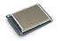

Brick
|  | Platform: Arduino (Mega)
Type: Sensor en actuator |
Dit apparaat is een samenstelling van vier deelapparaten, die zijn samengebracht in een touchscreen.
Er zijn drie actuatoren (tekstregels, tekstopmaak en numeriek display) en één sensor (met enkele knoppen).
De deelapparaten verschijnen apart in de snelmenu’s.
Apparaatgegevens
| Fabrikant: | Er zijn meerdere fabrikanten, die een compatibel scherm maken. |
| Informatie: | Voor uitgebreide informatie over compatibel schermen zie
de website van Henning Karlsen (2015). |
Modelgegevens
| Ontwerp: | Standaard RoboTiles |
| Jaar: | 2014 |
| Licentie: | GNU-GPL (Open source) |
Deelapparaat ’Knoppen’
Signalen
Te ontvangen signalen: (Geen)
Uitgezonden signalen: Links ingedrukt, Rechts ingedrukt, Menu ingedrukt, Vermogen (%)
Constante signalen: (Geen)
Beschrijving
Onderaan het scherm worden vier knoppen geprojecteerd.
Met de knop start/stop kan de uitvoering van een programma worden gestart, gepauseerd en weer worden voortgezet.
Bij het indrukken van een knop (start, links, rechts of menu) zendt de tile een bijbehorend signaal uit.
Verder kunnen de knoppen links en rechts worden gebruikt om een vermogen in te stellen.
Het vermogen loopt van 0% tot 100%.
Let op! Zonder het apparaat Knoppen wordt een programma altijd direct na het uploaden gestart.
Door het apparaat Knoppen toe te voegen, is dit niet langer het geval.
Snelmenu
Het apparaat bevindt zich het snelmenu Signalen.
Instellingen
Er zijn geen instellingen voor de knoppen.
Te ontvangen signalen
De knoppen ontvangen geen signalen.
Uitgezonden signalen
| Links ingedrukt | Dit signaal wordt uitgezonden als de knop links wordt ingedrukt. |
| Rechts ingedrukt | Dit signaal wordt uitgezonden als de knop rechts wordt ingedrukt. |
| Menu ingedrukt | Dit signaal wordt uitgezonden als de knop menu wordt ingedrukt. |
| Vermogen(%) | Bij het indrukken van de knoppen links en rechts
verandert het vermogen tussen de 0% en 100%. |
Constante signalen
De knoppen maken geen gebruik van constante signalen.
Kalibratie
Er is geen kalibratie van de knoppen nodig.
Deelapparaat ’Tekstregels’
Signalen
Te ontvangen signalen: Regel 1, Regel 2, ... Regel 8, Begin leeg, Wis scherm als
Uitgezonden signalen: (Geen)
Constante signalen: Ja, Nee
Beschrijving
Met deze tile wordt het bovenste deel van het scherm als tekstscherm benaderd.
(Het onderste deel is gereserveerd voor het deelapparaat Knoppen.)
Het scherm heeft acht regels. Eventueel kun je ervoor kiezen om de tekstregels bij een bepaald signaal te wissen.
Er kunnen geen afbeeldingen worden geplaatst.
Snelmenu
Het apparaat bevindt zich het snelmenu Actuatoren.
Instellingen
Er zijn geen instellingen voor de tekstregels.
Te ontvangen signalen
| Regel 1 | De tekst wordt op de eerste regel geplaatst. |
| Regel 2 | De tekst wordt op de tweede regel geplaatst. |
| Regel 3 | De tekst wordt op de derde regel geplaatst. |
| Regel 4 | De tekst wordt op de vierde regel geplaatst. |
| Regel 5 | De tekst wordt op de vijfde regel geplaatst. |
| Regel 6 | De tekst wordt op de zesde regel geplaatst. |
| Regel 7 | De tekst wordt op de zevende regel geplaatst. |
| Regel 8 | De tekst wordt op de achtste regel geplaatst. |
| Begin leeg | Moet het scherm aan het begin van de stap worden gewist? Vul hier een Constante signaal in. |
| Wis scherm als | Wis het scherm als het opgegeven signaal is ’gelukt’. |
Uitgezonden signalen
De tekstregels zenden geen signalen uit.
Constante signalen
| Ja | Gebruik Ja om de tekstregels aan het begin leeg te maken. |
| Nee | Gebruik Nee om de tekstregels aan het begin te laten zoals ze zijn. |
Kalibratie
Er is geen kalibratie van de tekstregels nodig.
Deelapparaat ’Tekstopmaak’
Signalen
Te ontvangen signalen: Regel 1, Regel 2, ... Regel 8
Uitgezonden signalen: (Geen)
Constante signalen: (Geen)
Beschrijving
Gebruik deze tile om de tekst van het apparaat Tekstregels van een eenvoudige opmaak te voorzien.
Dit gebeurt d.m.v. tags die met een ’hash’-teken (#) beginnen en door spaties van elkaar worden gescheiden.
De volgende tabel toont de mogelijkheden:
| #FD | Donker lettertype (= zwart). |
| #FL | Licht lettertype (= grijs). |
| #Tn | Stelt de tab-positie in op ’n’,
waarbij ’n’ een getal tussen 0 en 19 mag zijn. |
| #AL | De tekst wordt links vanaf de tab-positie geplaatst. |
| #AR | De tekst wordt rechts tot aan de tab-positie geplaatst. |
Tekst zonder opmaak neemt standaard de waarden #FD, #T0 en #AL aan.
Snelmenu
Het apparaat bevindt zich het snelmenu Actuatoren.
Instellingen
Er zijn geen instellingen voor de tekstopmaak.
Te ontvangen signalen
| Regel 1 | Opmaak voor de eerste tekstregel. |
| Regel 2 | Opmaak voor op de tweede tekstregel. |
| Regel 3 | Opmaak voor op de derde tekstregel. |
| Regel 4 | Opmaak voor op de vierde tekstregel. |
| Regel 5 | Opmaak voor op de vijfde tekstregel. |
| Regel 6 | Opmaak voor op de zesde tekstregel. |
| Regel 7 | Opmaak voor op de zevende tekstregel. |
| Regel 8 | Opmaak voor op de achtste tekstregel. |
Uitgezonden signalen
De opmaak zendt geen signalen uit.
Constante signalen
De opmaak maakt geen gebruik van constante signalen.
Kalibratie
Er is geen kalibratie van de opmaak nodig.
Deelapparaat ’Display’
Signalen
Te ontvangen signalen: Tekst r1, Opmaak r1, Tekst r2, Opmaak r2, Tekst r3, Opmaak r3
Uitgezonden signalen: (Geen)
Constante signalen: (Geen)
Beschrijving
Met deze tile wordt het bovenste deel van het scherm als numeriek display benaderd.
(Het onderste deel is gereserveerd voor het deelapparaat Knoppen.)
Het display heeft drie regels. Er kunnen alleen cijfers en spaties worden afgebeeld (dus geen decimaal-tekens, enz.).
Het numerieke display kan samen met het deelapparaat Tekstregels worden gebruikt
om gegevens op een aantrekkelijke manier op het scherm te tonen.
Eén regel van het numerieke display beslaat dan drie tekstregels.
Het numerieke display wordt m.b.v. het deelapparaat Tekstregels gewist.
Snelmenu
Het apparaat bevindt zich het snelmenu Actuatoren.
Instellingen
Er zijn geen instellingen voor de tekstregels.
Te ontvangen signalen
| Tekst r1 | Het getal wordt op de eerste regel geplaatst. |
| Opmaak r1 | Opmaak voor de eerste regel. |
| Tekst r2 | Het getal wordt op de tweede regel geplaatst. |
| Opmaak r2 | Opmaak voor de tweede regel. |
| Tekst r3 | Het getal wordt op de derde regel geplaatst. |
| Opmaak r3 | Opmaak voor de derde regel. |
Zie de Beschrijving van het deelapparaat Tekstopmaak voor de mogelijkheden van de opmaak.
Uitgezonden signalen
Het numerieke display zendt geen signalen uit.
Constante signalen
Het numerieke display maakt geen gebruik van constante signalen.
Kalibratie
Er is geen kalibratie van het numerieke display nodig.